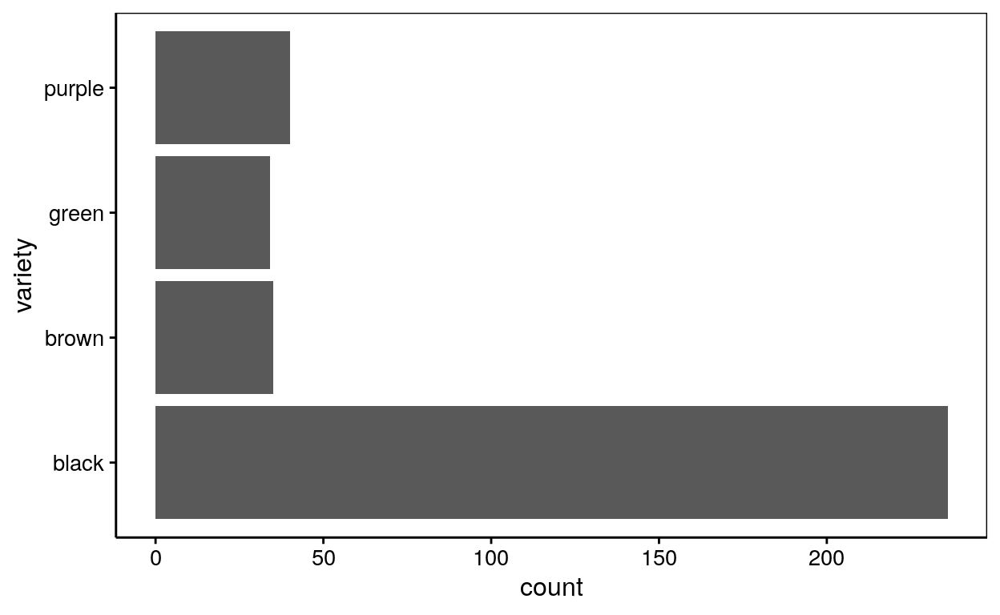
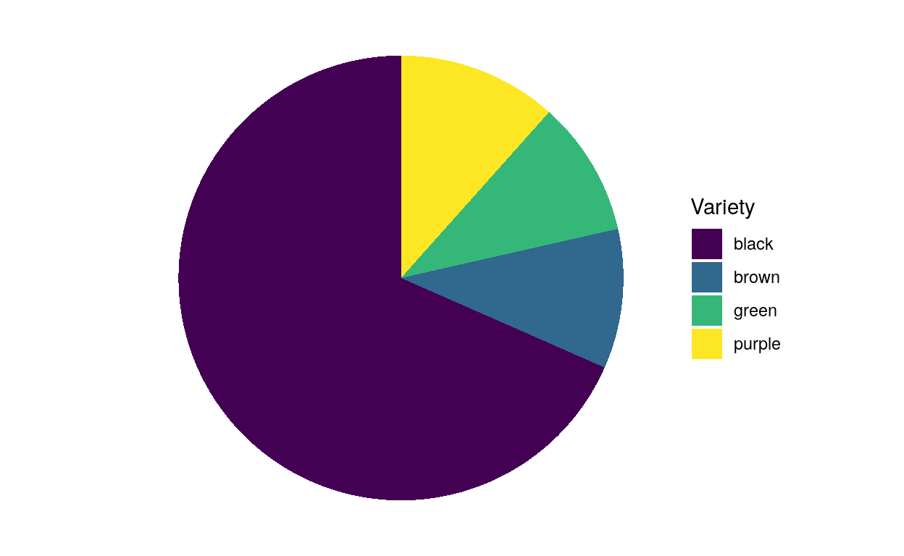
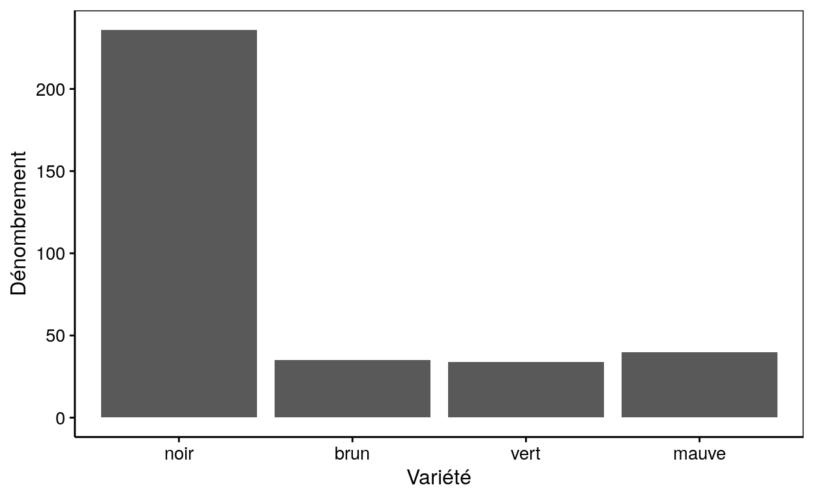
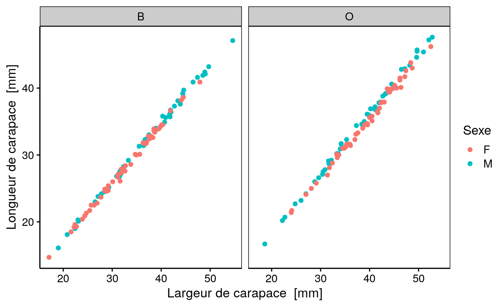
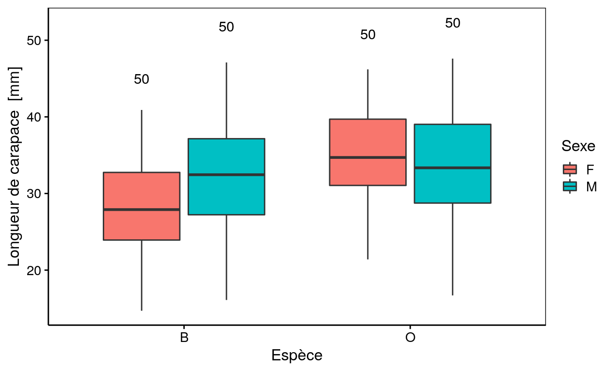
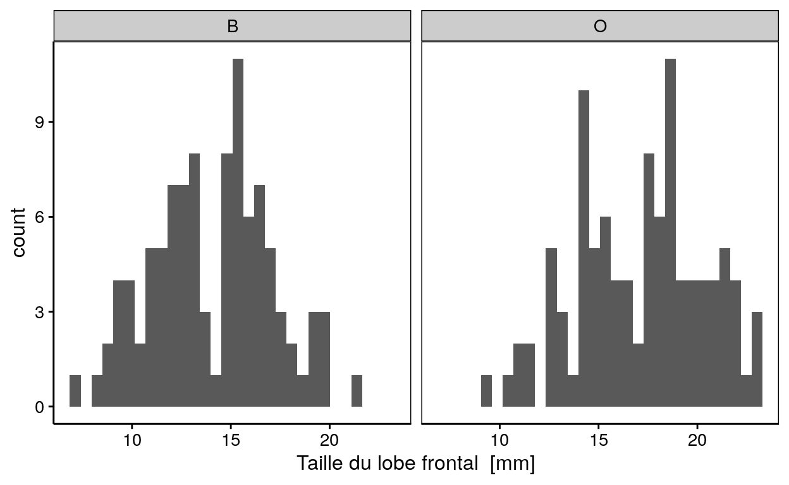
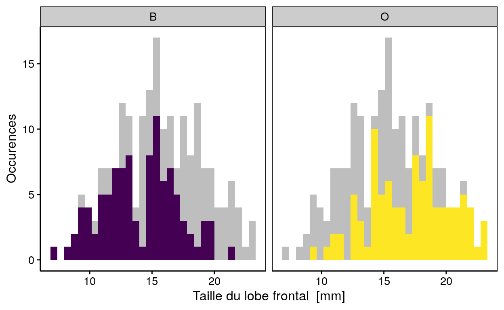
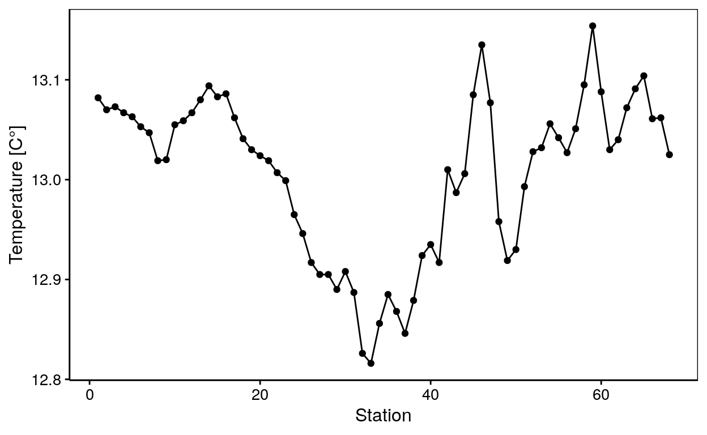
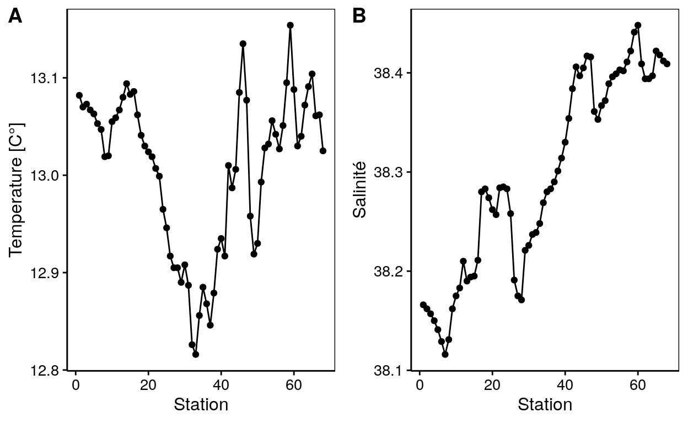

Science des données biologiques I
Réalisé par le service d'Écologie numérique, Université de Mons (Belgique)Objectifs
- Vérifier l’acquisition des notions relatives à la réalisation de graphiques variés.
Visualisation graphique
La visualisation graphique est le point de départ dans l’analyse de données.
Dénombrement d’oursins perforant dans la baie de Tuléar (Madagascar)
La jeu de données nommé e_mathaei est un recensement de différentes variétés de l’oursin Echinometra mathaei.
e_mathaei <- data_frame(id = 1:345, variety = c(rep("black", times = 236),
rep("purple", times = 40),
rep("brown", times = 35),
rep("green", times = 34)))
# Visualisation de quelques lignes du tableau de données
e_mathaei[c(200, 250, 300, 340), ]Les scientifiques produisent le graphique suivant :

A partir du jeu de donnée e_mathaei, reproduisez le graphique ci-dessus représentant le nombre d’oursin pour chacune des variétés (variety).
chart(___, formula = ~ ___) +
___() +
___()chart(DF, formula = ~ ___) +
geom_bar() +
___()chart(e_mathaei, formula = ~ FACTOR) +
geom_bar() +
coord_flip()
#### Attention : solution dans le 'hint' suivant! ####chart(e_mathaei, formula = ~ variety) +
geom_bar() +
coord_flip()Les chercheurs hésitent à proposer un graphique en cammembert dans l’article qu’ils écrivent.

A partir du jeu de donnée e_mathaei, reproduisez le graphique ci-dessus représentant le nombre d’oursin pour chacune des variétés (variety).
chart(data = DF, ~ ___ %fill=% ___) +
___(width = 1) +
coord_polar("y", start = 0) +
theme_void() +
scale_fill_viridis_d() +
labs(fill = "Variety")chart(data = e_mathaei, ~ factor(0) %fill=% FACTOR) +
geom___(width = 1) +
coord_polar("y", start = 0) +
theme_void() +
scale_fill_viridis_d() +
labs(fill = "Variety")
#### Attention : solution dans le 'hint' suivant! ####chart(data = e_mathaei, ~ factor(0) %fill=% variety) +
geom_bar(width = 1) +
coord_polar("y", start = 0) +
theme_void() +
scale_fill_viridis_d() +
labs(fill = "Variety")Les chercheurs souhaitent en plus générer un graphique entièrement en français.

A partir du jeu de donnée e_mathaei, reproduisez le graphique ci-dessus représentant le nombre d’oursin pour chacune des variétés (variety). Attention que le graphique doit être entièrement en français !
e_mathaei$variety <- factor(___, levels = ___, labels = ___)
chart(___, formula = ~ ___) +
___() +
___(x = ___, y = ___)e_mathaei$variety <- factor(e_mathaei$___, levels = c(___, ___, ___, ___), labels = c(___, ___, ___, ___))
chart(___, formula = ~ ___) +
___() +
___(x = ___, y = ___)e_mathaei$variety <- factor(e_mathaei$variety, levels = c("black", "brown", "green", "purple"), labels = c("noir", "brun", "vert", "mauve"))
chart(___, formula = ~ ___) +
geom___() +
labs(x = ___, y = ___)
#### Attention : solution dans le 'hint' suivant! ####e_mathaei$variety <- factor(e_mathaei$variety, levels = c("black", "brown", "green", "purple"), labels = c("noir", "brun", "vert", "mauve"))
chart(e_mathaei, formula = ~ variety) +
geom_bar() +
labs(x = "Variété", y = "Dénombrement")Biométrie de crabes
Des scientifiques étudient la biométrie de Leptograpsus variegatus et ont obtenu le tableau ci-dessous.
(crabs <- read("crabs", package = "MASS", lang = "fr"))Il décident de réaliser le graphique ci-dessous.

Reproduisez, à partir des données contenues dans crabs, le graphique ci-dessus qui représante la longueur de la carapace (length) en fonction de sa largeur (width) en utilisant le sexe (sex) en couleur et l’espèce (species) en facette.
___(___, ___ ~ ___ ___ ___ | ___) +
___()chart(DF, ___ ~ ___ %color=% ___ | ___) +
geom___()chart(crabs, NUM ~ NUM %color=% FACTOR | FACTOR) +
geom_point()
#### Attention : solution dans le 'hint' suivant! ####chart(crabs, length ~ width %color=% sex | species) +
geom_point()Ensuite, les chercheurs proposent le graphique suivant :

A partir du jeu de données crabs, reproduisez le graphique en boites de dispersion ci-dessus représentant la longueur de la carapace (length) en fonction de l’espèce (species) et coloré par le sexe (sex).
give_n <- function(x)
c(y = max(x) * 1.1, label = length(x))
chart(data = ___, ___ ~ ___ ___ ___) +
___() +
stat_summary(fun.data = ___, geom = "text", hjust = 0.5,
position = position_dodge(0.75))give_n <- function(x)
c(y = max(x) * 1.1, label = length(x))
chart(data = DF, ___ ~ ___ %fill=% ___) +
geom___() +
stat_summary(fun.data = ___, geom = "text", hjust = 0.5,
position = position_dodge(0.75))give_n <- function(x)
c(y = max(x) * 1.1, label = length(x))
chart(data = crabs, NUM ~ FACTOR %fill=% FACTOR) +
geom_boxplot() +
stat_summary(fun.data = give_n, geom = "text", hjust = 0.5,
position = position_dodge(0.75))
#### Attention : solution dans le 'hint' suivant! ####give_n <- function(x)
c(y = max(x) * 1.1, label = length(x))
chart(data = crabs, length ~ species %fill=% sex) +
geom_boxplot() +
stat_summary(fun.data = give_n, geom = "text", hjust = 0.5,
position = position_dodge(0.75))Les chercheurs proposent ensuite ce graphique pour décrire les données.
`stat_bin()` using `bins = 30`. Pick better value with `binwidth`.
Toujours à partir du jeu de données crabs, reproduisezle graphique ci-dessus représentant la distribution du lobe frontal (front) pour chacune des espèces (species)
chart(___, formula = ~ ___ | ___) +
___()chart(DF, formula = ~ NUM | FACTOR) +
geom_histogram()
#### Attention : solution dans le 'hint' suivant! ####chart(crabs, formula = ~ front | species) +
geom_histogram()Les chercheurs ne sont cependant pas satisfaits de ce graphique et réalisent la version suivante :
`stat_bin()` using `bins = 30`. Pick better value with `binwidth`.
`stat_bin()` using `bins = 30`. Pick better value with `binwidth`.
Reproduisez le graphique ci-dessus, les variables sont les mêmes que pour le graphique précédent.
chart(data = ___, ~ ___ ___ ___ ___ ___) +
# histogramme d'arrière plan en gris ne tenant pas compte de la variable species
___(data = select(___, - ___), fill = "grey") +
___(show.legend = ___) +
ylab("Occurences") +
scale_fill_viridis_d()chart(data = DF, ~ ___ %fill=% ___ | ___) +
# histogramme d'arrière plan en gris ne tenant pas compte de la variable species
geom___(data = select(DF, - ___), fill = "grey") +
geom___(show.legend = ___) +
ylab("Occurences") +
scale_fill_viridis_d()chart(data = DF, ~ NUM %fill=% FACTOR | FACTOR) +
# histogramme d'arrière plan en gris ne tenant pas compte de la variable species
geom_histogram(data = select(DF, - FACTOR), fill = "grey") +
geom_histogram(show.legend = ___) +
ylab("Occurences") +
scale_fill_viridis_d()
#### Attention : solution dans le 'hint' suivant! ####chart(data = crabs, ~ front %fill=% species | species) +
# histogramme d'arrière plan en gris ne tenant pas compte de la variable species
geom_histogram(data = select(crabs, -species), fill = "grey") +
geom_histogram(show.legend = FALSE) +
ylab("Occurences") +
scale_fill_viridis_d()Transect entre Nice et la Corse
Les chercheurs réalisent un transect dans la Mer Méditerranée depuis le port de Nice jusqu’à la baie de Calvi en Corse. Ils vont donc réaliser des prélèvements en 68 stations entre ces deux extrêmes.
(marphy <- read("marphy", package = "pastecs"))marphy$Station <- 1:68Les chercheurs souhaitent tout d’abord représenter la température en fonction des stations.

Utilisez les données du jeu de données marphy pour reproduire le graphique ci-dessus représenant la température (Temperature) en fonction des stations (Stations).
chart(___, ___ ~ ___) +
___() +
___() +
___(___ = ___)chart(DF, ___ ~ ___) +
geom___() +
geom___() +
labs(___ = ___)chart(marphy, NUM ~ NUM) +
geom_line() +
geom_point() +
labs(y = ___)
#### Attention : solution dans le 'hint' suivant! ####chart(marphy, Temperature ~ Station) +
geom_line() +
geom_point() +
labs(y = "Temperature [C°]")Les chercheurs souhaitent ensuite représenter la salinté (Salinity) en fonction des stations.

Reproduisez le graphique ci-dessus.
chart(___, ___ ~ ___) +
___() +
___() +
___(___ = ___)chart(marphy, Salinity ~ Station) +
geom_line() +
geom_point() +
labs(y = "Salinité")Ils decident pour finir de représenter les deux graphiques ensembles dans une figure composite.

Reproduisez le graphique ci-dessus en utilisant les mêmes variables que pour les graphiques précédents.
# Graphique de la température
a <- chart(___, ___ ~ ___) +
___() +
___() +
___(___)
# Graphique de la salinité
b <- chart(___, ___ ~ ___) +
___() +
___() +
___(___)
# Combinaison des 2 graphiques
combine_charts(list(___, ___))# Graphique de la température
a <- chart(DF, NUM ~ NUM) +
geom_line() +
geom_point() +
labs(___)
# Graphique de la salinité
b <- chart(DF, NUM ~ NUM) +
geom_line() +
geom_point() +
labs(___)
# Combinaison des 2 graphiques
combine_charts(list(___, ___))# Graphique de la température
a <- chart(marphy, Temperature ~ Station) +
geom_line() +
geom_point() +
labs(y = "Temperature [C°]")
# Graphique de la salinité
b <- chart(marphy, Salinity ~ Station) +
geom_line() +
geom_point() +
labs(y = "Salinité")
# Combinaison des 2 graphiques
combine_charts(list(___, ___))
#### Attention : solution dans le 'hint' suivant! ##### Graphique de la température
a <- chart(marphy, Temperature ~ Station) +
geom_line() +
geom_point() +
labs(y = "Temperature [C°]")
# Graphique de la salinité
b <- chart(marphy, Salinity ~ Station) +
geom_line() +
geom_point() +
labs(y = "Salinité")
# Combinaison des 2 graphiques
combine_charts(list(a, b))QCM
Choix du graphiques le plus adéquats
Répondez aux questions à choix multiples ci-dessous.
La boite de dispersion
Conclusion
Félicitation ! Vous venez de terminer votre séance d’exercices dans un tutoriel “learnr”.
Vous maitrisez maintenant tous les outils nécessaire pour la réalisation de la plupart de vos graphiques.